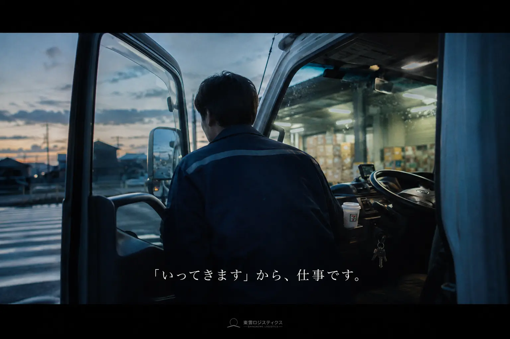
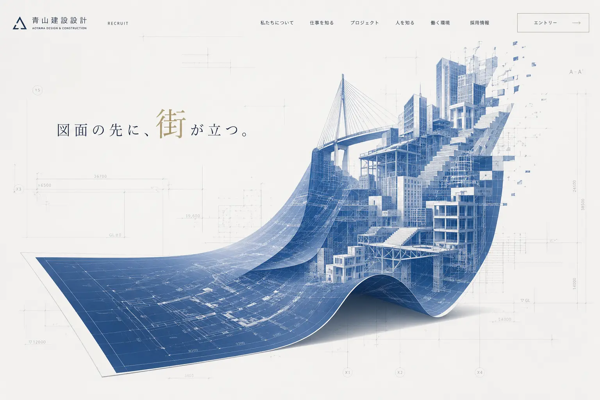
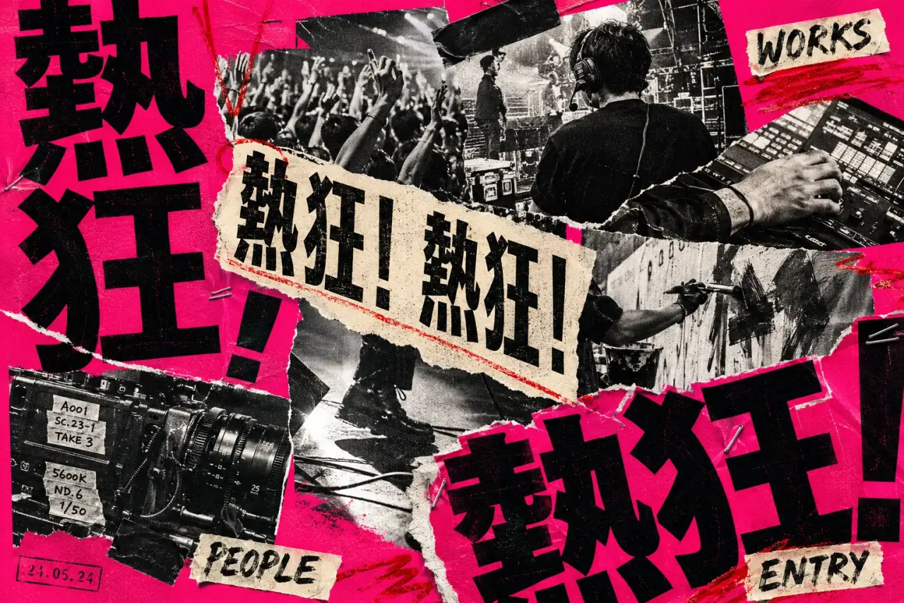

RECRUITING SITE STUDIO — TILTO°
まだ言葉になっていない魅力を、採用サイトに。
採用コンサルタント×AI×Web制作
02 / ONE COMPANY, MANY VOICES
変わるのは、会社ではなく。
どこに光を当て、誰に届けるか。



03 / FUSION EXPERIENCESCROLL TO SHAPE THE FEELING
若い人に届いてほしいちゃんとした会社に見せたいでも、堅くしたくない信頼感温度社員の顔うちらしさって？写真がいいかも仕事内容を伝えたい少し、かっこよく親しみやすさもまだ、ぼんやりしている言葉にできない採用を変えたい
05EXPRESSION SHOWROOM
表現ショールーム。
ACT 2その裏側の設計STRATEGY
06 / BEHIND THE EXPRESSION美しいだけでは、
美しいだけでは、
採用は動かない。
採用サイトを、建築のように設計する。
4つの設計が、ひとつの採用体験をつくる。
07 THE TILTO° WAY
人が見つけ、AIで広げ、
Webで届く形にする。
SCROLL TO CONNECT ↓Webで届く形にする。
AIだけでも、制作会社だけでもない。採用を考えるプロと、Webをつくるプロが、最初から同じチームで進めます。
ONE TEAM / ONE ORIGINALだから、速いだけじゃない。その会社にしかない採用サイトになる。
08 BUILD WITH TILTO°
相談から、公開後まで。
- 01
聞く
採用課題と現場の声を丁寧に整理し、その会社で働く魅力の核を見つけます。
- LEAD
- 採用コンサルタント
- OUTPUT
- 課題整理・魅力の言語化
- 02
決める
届けたい相手と採用コンセプトを定め、AIで言葉や表現の可能性を一気に広げます。
- LEAD
- コンサルタント ＋ AI
- OUTPUT
- コンセプト・表現探索
- 03
つくる
複数の案を人の目で比べて方向を選び、コピー・デザイン・実装まで一貫して仕上げます。
- LEAD
- Web制作 ＋ AI
- OUTPUT
- 比較・コピー・Web実装
- 04
届ける
最初から同じチームが伴走し、公開前の確認から公開後の更新・改善まで支援します。
- LEAD
- ONE TEAM
- OUTPUT
- 公開・改善
09 PRICE
必要なのは、ふたつだけ。
- 01 月額
- 20,000円〜（税別）
- 02 初期費用
- 0円
10 FAQ
よくある質問
Q.01まだイメージが固まっていなくても大丈夫？＋
大丈夫です。ぼんやりした状態から、採用課題と会社の魅力を一緒に整理します。
Q.02AIはどこで使いますか？＋
コピー・構成・デザインの可能性を広げ、比較するために使います。方向を決め、品質を担保するのは人です。
Q.03原稿や写真もお願いできますか？＋
はい。原稿制作に加え、必要に応じて撮影・映像・イラストの専門家を編成します。
Q.04公開までどれくらいかかりますか？＋
目安は2〜4か月です。内容や規模に合わせ、最初のご相談で進め方をご案内します。